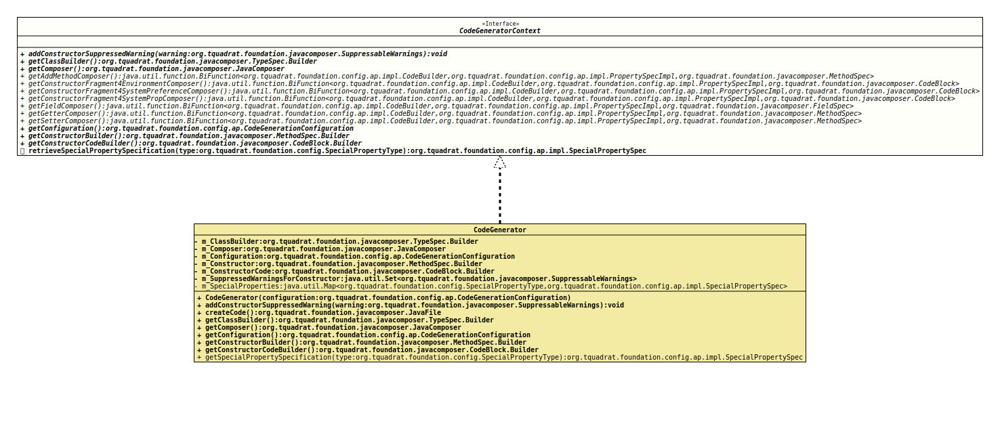

Interface CodeGeneratorContext
- All Known Implementing Classes:
CodeGenerator
@ClassVersion(sourceVersion="$Id: CodeGeneratorContext.java 1061 2023-09-25 16:32:43Z tquadrat $")
@API(status=MAINTAINED,
since="0.1.0")
public interface CodeGeneratorContext
The API that provides access to the code generator context, including the
already generated code.
- Author:
- Thomas Thrien (thomas.thrien@tquadrat.org)
- Version:
- $Id: CodeGeneratorContext.java 1061 2023-09-25 16:32:43Z tquadrat $
- Since:
- 0.1.0
- UML Diagram
-

UML Diagram for "org.tquadrat.foundation.config.ap.impl.codebuilders.CodeGeneratorContext"
{kind=link}
-
Method Summary
Modifier and TypeMethodDescriptionvoidAdds a warning to the@SuppressWarningsannotation for the constructor of the new configuration bean.Provides the default implementation of the method that composes an 'add' method for a given property.Provides access to the class builder for the configuration bean.Provides access to theJavaComposerinstance that is used for the code generation.Provides access to the configuration.Provides access to the builder for the constructor.Provides access to the code builder for the constructor body.Provides the default implementation of the method that composes a constructor fragment for the initialisation of a given property in case it is annotated with@EnvironmentVariable.Provides the default implementation of the method that composes a constructor fragment for the initialisation of a given property in case it is annotated with@EnvironmentVariable.Provides the default implementation of the method that composes a constructor fragment for the initialisation of a given property in case it is annotated with@EnvironmentVariable.Provides the default implementation of the method that composes a field for a given property.Provides the default implementation of the method that composes a getter for a given property.Provides the default implementation of the method that composes a setter for a given property.default SpecialPropertySpecReturns the definition for the special property type.
-
Method Details
-
addConstructorSuppressedWarning
Adds a warning to the@SuppressWarningsannotation for the constructor of the new configuration bean.- Parameters:
warning- The warning to suppress.
-
getClassBuilder
Provides access to the class builder for the configuration bean.- Returns:
- The reference to the class builder.
-
getComposer
Provides access to theJavaComposerinstance that is used for the code generation.- Returns:
- The reference for the composer.
-
getAddMethodComposer
Provides the default implementation of the method that composes an 'add' method for a given property.- Returns:
- The composer method.
-
getConstructorFragment4EnvironmentComposer
static BiFunction<CodeBuilder,PropertySpecImpl, getConstructorFragment4EnvironmentComposer()CodeBlock> Provides the default implementation of the method that composes a constructor fragment for the initialisation of a given property in case it is annotated with@EnvironmentVariable.- Returns:
- The composer method.
-
getConstructorFragment4SystemPreferenceComposer
static BiFunction<CodeBuilder,PropertySpecImpl, getConstructorFragment4SystemPreferenceComposer()CodeBlock> Provides the default implementation of the method that composes a constructor fragment for the initialisation of a given property in case it is annotated with@EnvironmentVariable.- Returns:
- The composer method.
-
getConstructorFragment4SystemPropComposer
static BiFunction<CodeBuilder,PropertySpecImpl, getConstructorFragment4SystemPropComposer()CodeBlock> Provides the default implementation of the method that composes a constructor fragment for the initialisation of a given property in case it is annotated with@EnvironmentVariable.- Returns:
- The composer method.
-
getFieldComposer
Provides the default implementation of the method that composes a field for a given property.- Returns:
- The composer method.
-
getGetterComposer
Provides the default implementation of the method that composes a getter for a given property.- Returns:
- The composer method.
-
getSetterComposer
Provides the default implementation of the method that composes a setter for a given property.- Returns:
- The composer method.
-
getConfiguration
Provides access to the configuration.- Returns:
- The configuration.
-
getConstructorBuilder
Provides access to the builder for the constructor.- Returns:
- The reference to the constructor builder.
-
getConstructorCodeBuilder
Provides access to the code builder for the constructor body.- Returns:
- The reference to constructor body code builder.
-
retrieveSpecialPropertySpecification
Returns the definition for the special property type.- Parameters:
type- The special property type.- Returns:
- The special property specification.
-